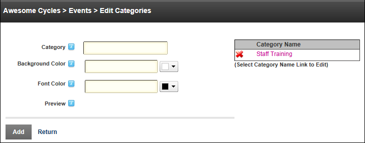

Adding Event Categories
How to add one or more categories to the Events module.
- Select
 Edit Categories from the module actions menu. This opens the Edit Categories page.
Edit Categories from the module actions menu. This opens the Edit Categories page.
- In the Category text box, enter a category name. To use the default color scheme (white background color and black font color, skip to Step 5.
- Optional. At Background Color, perform one of the following to set the background color:
- To select a color: Click the Color Picker
 button and then select a color from the pop-up window. This adds the hexadecimal value of the selected color into the text box.
button and then select a color from the pop-up window. This adds the hexadecimal value of the selected color into the text box. - To select no color: Click the Color Picker button and then click to No Color
 button. This adds the value of #null into the text box and allows you to use the color associated with the applied stylesheet.
button. This adds the value of #null into the text box and allows you to use the color associated with the applied stylesheet. - To create a custom color: Click the Color Picker button and then click the Custom Color
 button and then drag the + button over the color grid and drag the arrow button up or down until the required color is displayed in the top left corner. Click the OK button to use your custom color.
button and then drag the + button over the color grid and drag the arrow button up or down until the required color is displayed in the top left corner. Click the OK button to use your custom color. - To manually set a color: Enter a web safe hexadecimal color value into the background color. E.g. #99d9ea
- Optional. At Font Color, update the font color as required. See Step 3.

- Click the Add link. This adds the new category in the Category Name list to the right.

- Repeat Steps 2-5 to add additional categories.
- Click the Return link to return to the module.